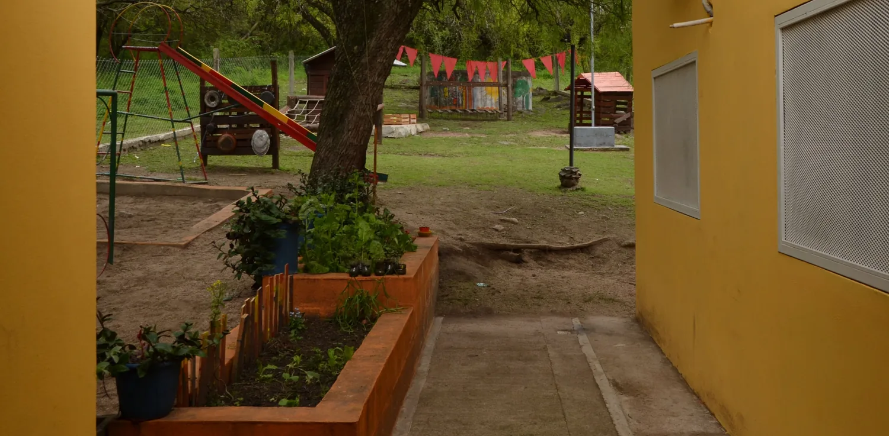
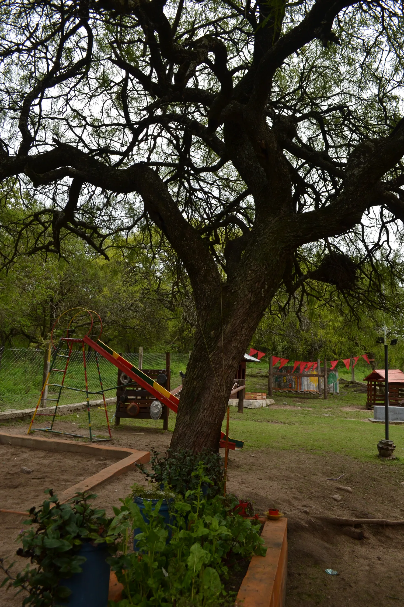
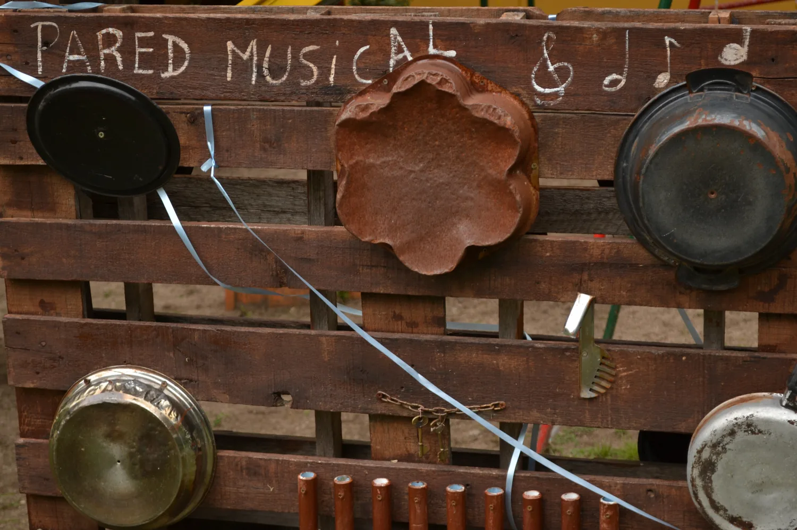
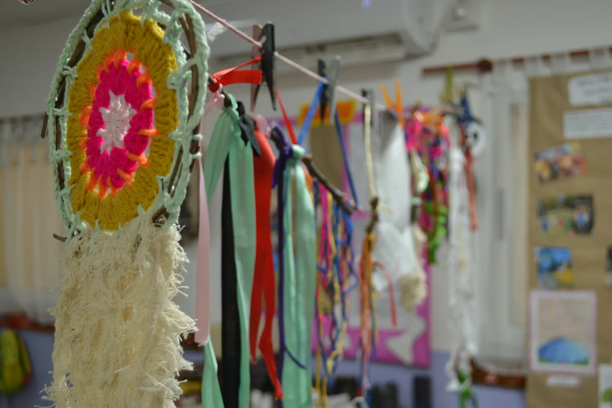
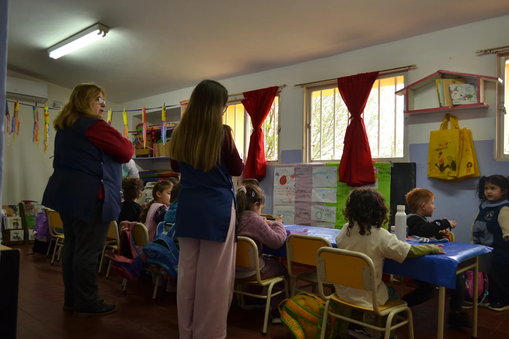
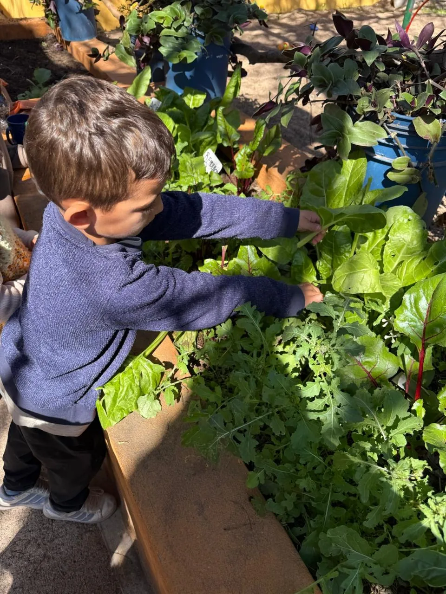

Jardín Juana Paula Manso
¡Inscripciones abiertas!
Barrio Cabana · Unquillo · Sierras Chicas
El jardín
Una escuela rural y estatal que respeta la infancia: naturaleza, ritmo, juego libre y arte.

La naturaleza como aula
El día transcurre al aire libre, entre árboles y tierra. La huerta, el barro y los frutos de cada estación son los primeros materiales de aprendizaje.

Ritmo y juego libre
Cada jornada sigue un ritmo sereno y previsible. En el juego espontáneo, los chicos eligen, prueban e inventan a su propio tiempo.

Los chicos participan
Cada uno a su manera: unos miran, otros prueban, otros inventan. En el jardín todos tienen un lugar para hacer y ser parte.

Comunidad y familias
Las familias son parte de la vida del jardín: fiestas, talleres y encuentros que hacen comunidad.
Proyectos
Algunos de los proyectos que compartimos en el jardín.

Huerta
Sembramos, cuidamos y cosechamos entre todos. La huerta enseña paciencia, trabajo compartido y el valor de lo que crece.
1 / 11Familias
Lo que dicen las familias que eligen el jardín cada día.
Un jardín humano y cercano. Mi hijo vuelve feliz de haber jugado entre los árboles, con barro en las manos y una sonrisa enorme.
— Mamá de sala de 4Buscábamos un lugar donde se respetara el tiempo de nuestra hija. Acá la infancia se vive sin apuro, con canciones, cuentos y naturaleza.
— Familia de Las EnsenadasLa calidez del equipo y la comunidad que se arma alrededor del jardín hacen toda la diferencia. Nos sentimos parte.
— Papá de sala de 5Inscripciones y visitas
¿Querés conocer el jardín? Coordinamos visitas y entrevistas durante todo el año.
Dirección
Rosario Vera Peñaloza, Las Ensenadas S/N
Unquillo, Córdoba
Teléfono
Horario
Abierto ahora
Cierra a las 4:30 p. m.